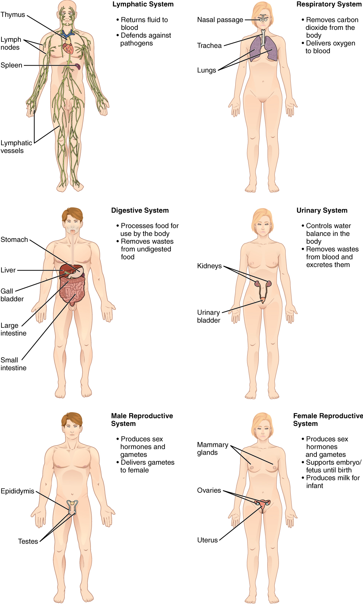

Se llama anatomía a la rama de la biología que estudia la estructura corporal de los seres vivientes, o sea, la forma, ubicación, interrelación y apariencia de las partes y órganos que componen sus cuerpos. Su nombre proviene de los vocablos griegos aná (“hacia arriba”) y témnein (“cortar”), ya que se inició con la observación del interior del cuerpo de los seres vivos.
La anatomía es considerada una de las ciencias básicas o “preclínicas” de la medicina. Surgió como inquietud en busca de conocimiento mucho antes de que existiera la idea de que los seres humanos podemos intervenir en el funcionamiento de nuestros cuerpos y así curarnos de alguna dolencia. La anatomía es muy cercana a la fisiología, ciencia que se ocupa de comprender la función de las partes del cuerpo de los seres vivos. A los científicos especializados en la anatomía se les conoce como anatomistas, aunque también se acepta el término “anatómicos”.
Biológicamente, el ser humano es un animal. Y, como los animales, el cuerpo humano se organiza, mediante una visión sistemática y a semejanza del Universo del que forma parte, en diferentes niveles de jerarquización que, enlistados en orden descendente (de lo macro a lo micro, de lo más visible y exterior hacia lo más invisible e interno), son los siguientes: se compone de aparatos, integrados a su vez por sistemas, compuestos a su vez por órganos, compuestos a su vez por tejidos, formados a su vez por células, compuestas a su vez por moléculas, etcétera. Otras visiones (funcional, morfogenética, clínica, etcétera), según otros criterios, estudian el cuerpo humano desde otras perspectivas, pero ésta es la que suele utilizarse para comprender lo básico.
La anatomía humana, como su nombre lo indica, se dedica al estudio de las estructuras del cuerpo humano. En general se orienta al conocimiento sobre las estructuras de carácter macroscópico, ya que otras disciplinas (como la histología o la citología) se encargan de elementos menores, como las células o los tejidos. Puede entenderse al cuerpo humano como una organización de estructuras en diferentes niveles: moléculas que forman células, células que componen tejidos, tejidos que establecen órganos, órganos que se integran en sistemas, etc.
Cabe mencionar, que también la anatomía puede enfocarse al estudio de los procesos biológicos como es el caso del desarrollo de la vida (a través del estudio de los embriones) o de las patologías que puede padecer individuos de una especie (estudiando los órganos enfermos para detectar patrones de enfermedades comunes entre seres vivos de la misma). La anatomía humana además es central en cualquier tipo de medicina, ya que para tratar el cuerpo humano es necesario conocerlo primero.
Su propósito es la descripción de los diversos órganos que componen el cuerpo de los seres vivos en tanto a ubicación, apariencia, relación y estructura. Estas investigaciones a menudo requieren de la disección del cuerpo, que puede ser real o simulada, como en el caso de las tomografías y otros métodos contemporáneos. Las descripciones del cuerpo se hacen tomándolo como un todo organizado, pero también por partes.
La anatomía es uno de los pilares de la medicina, la biología y de otras ciencias derivadas de éstas. Esto se debe a que el conocimiento del propio cuerpo y del cuerpo de los demás seres vivos es la base de muchas formas de su manipulación o de nuestra interacción con ellos. A ellas les debemos en primer lugar la comprensión del funcionamiento habitual del cuerpo humano y de otros seres vivos. Pero además, en ella se basa la búsqueda de la cura de enfermedades y la solución de dolencias específicas.
El estudio del cuerpo de la anatomía se complementa y a la vez alimenta los campos de saber específicos de otras ciencias de enfoque más específico. Entre ellas se encuentran la osteología (estudio de los huesos), la artrología (estudio de las articulaciones) y la miología (estudio de los músculos).
Además es imprescindible para las ciencias enfocadas al funcionamiento de algún órgano específico. Por ejemplo es utilizada en cardiología (corazón), gastroenterología (sistema digestivo), neumonología (pulmones), etc.
Un sistema es un grupo de órganos asociados que concurren en una función general y están formados predominantemente por los mismos tipos de tejidos. Algunos de ellos son:

Un aparato es un grupo de órganos que desempeñan una función común y sus órganos no tienen predominio de ningún tejido, por ejemplo el aparato digestivo, o incluyen a varios sistemas, como el aparato locomotor, integrado por los sistemas muscular, óseo, articular. Algunos de ellos son: